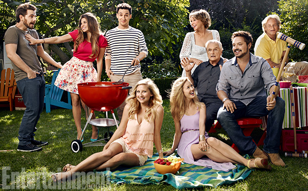

Homepage
Boy Meets World
Boy Meets World is an American television sitcom that focuses on the coming-of-age events and everyday life-lessons of Cory Matthews (portrayed by Ben Savage) with a dominant english script. The show is about Cory with his friends and family that shows their lives from middle school to life in college, spread over seven seasons. The show aired from 1993 to 2000 on ABC, part of the network's TGIF lineup. The entire series has since been released on DVD, as well as on iTunes. A sequel titled Girl Meets World, focusing on a new generation, ran on Disney Channel from June 27, 2014 to January 20, 2017 but was cancelled after tree seasons.
Rattings and reviews

A reunion for the 20th aniversary of the first aired episode was covered by Entertainment weekly.
The cast continue their friendship to this day.
Episode guide
| Season | Episodes | Originally aired | Viewers (millions) |
|---|---|---|---|
| 1 | 22 | September 24 1993 - May 13 1994 | 8.4[1] |
| 2 | 23 | September 23 1994 - May 19 1995 | 11.5[2] |
| 3 | 22 | September 22 1995 - May 17 1996 | 10.1[3] |
| 4 | 22 | September 20 1996 - May 2 1997 | 8.7[4] |
| 5 | 24 | October 3 1997 - May 15 1998 | 11.6[5] |
| 6 | 22 | September 25 1998 - May 14 1999 | 10.9[6] |
| 7 | 23 | September 24 1999 - May 5 2000 | 8.7[7] |